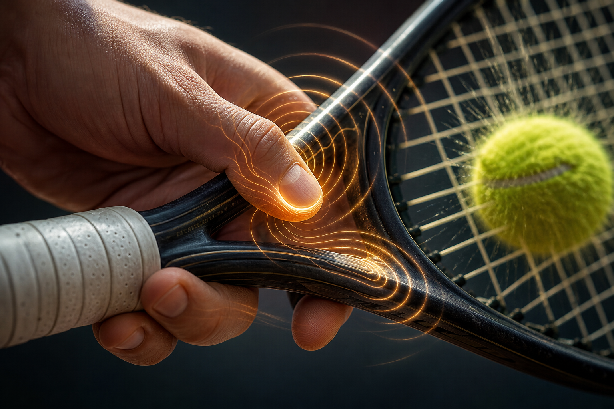
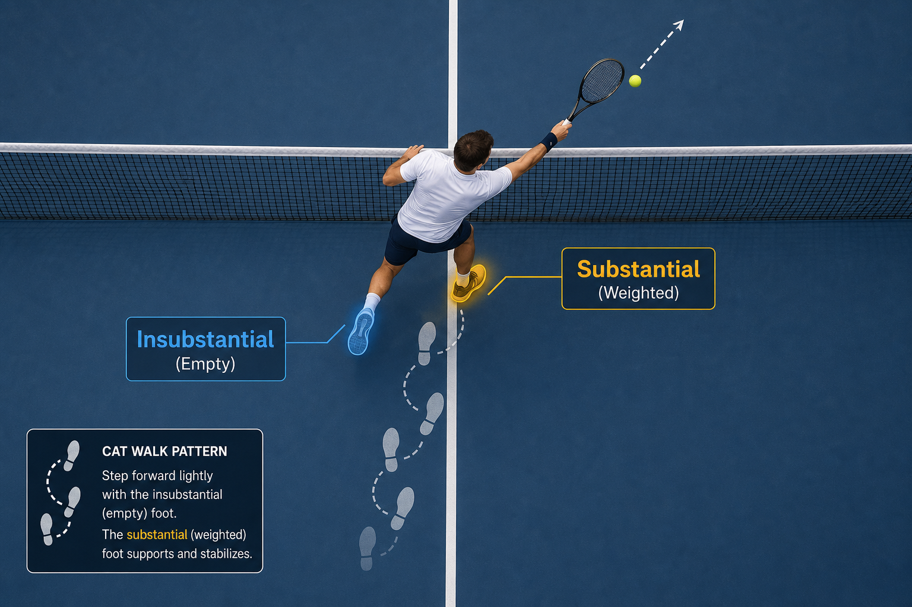

Nghệ_Thuật_Chuyển_Hướng_Các_Nguyên_Lý_Thái_Cực_Quyền_Trong_Cú_Volley_Tennis¶
Nghệ Thuật Chuyển Hướng: Các Nguyên Lý Thái Cực Quyền Trong Cú Volley Tennis
Tác giả: Manus AI
Giới thiệu
Cú volley trong tennis, thường được mô tả là một cú đánh cần cảm giác và khả năng chuyển hướng hơn là sức mạnh thô, có những điểm tương đồng sâu sắc về mặt khái niệm và cơ sinh học với các nguyên lý cốt lõi trong Thái Cực Quyền. Phân tích này tích hợp các khái niệm cơ bản của Thái Cực Quyền như Phóng Tùng (thả lỏng), Thính Kình (năng lượng lắng nghe), và đặc biệt là các khung cấu trúc hình chữ U và chữ L giữa cẳng tay và vợt để làm chủ cú volley như một sự chuyển hướng lực tinh tế.
1. Cầm Vợt Volley: Nền Tảng Của Sự Nhạy Cảm
Tài liệu [Volleygrip.md] nhấn mạnh rằng cú volley không phải là một cú vung vợt mà là một sự chuyển hướng [1]. Điều này đòi hỏi một cách cầm vợt không bị nén chặt hoàn toàn, cho phép vợt có những \"chuyển động nhỏ\" bên trong lòng bàn tay.
Phóng Tùng (放松): Nghệ Thuật Của Sức Mạnh Thư Giãn
Trong Thái Cực Quyền, Phóng Tùng (放松) là nguyên lý giải phóng căng thẳng cơ bắp không cần thiết trong khi vẫn duy trì sự toàn vẹn của cấu trúc, thường được mô tả là \"sắt bọc bông\" [2].

Liên hệ với Volley: Một cách cầm vợt lỏng (áp lực 3-4/10) cho phép đầu vợt hơi nhường lại khi tiếp xúc, kéo dài thời gian tiếp xúc và giảm lực đỉnh. Điều này giúp người chơi \"tiêu hao tốc độ thay vì phản lại,\" hấp thụ hiệu quả năng lượng của bóng và tạo điều kiện cho việc chuyển hướng [1].
Thính Kình (聽勁): Cảm Nhận Quả Bóng
Thính Kình (聽勁), hay \"năng lượng lắng nghe,\" là khả năng cảm nhận và diễn giải lực thông qua xúc giác [3].

Liên hệ với Volley: Ngón cái và ngón trỏ hoạt động như \"bộ cảm biến,\" cung cấp phản hồi xúc giác về tác động của bóng. Sự nhạy cảm này cho phép điều chỉnh nhỏ trong tích tắc, giúp người chơi \"cảm nhận bóng trên dây vợt\" và điều khiển nó một cách chính xác [1].
2. Các Khung Cấu Trúc: Hình Chữ U và Chữ L
Theo tài liệu [volley.md], việc duy trì các khung hình học cụ thể giữa cẳng tay và vợt là chìa khóa cho sự ổn định và kiểm soát [5].
Hình Chữ U: Khung Chuẩn Bị
Khung hình chữ U được hình thành tại thời điểm kết thúc quá trình chuẩn bị (backswing). Trong đó, cẳng tay đóng vai trò là đáy của chữ U, còn cánh tay trên và vợt tạo thành hai cạnh bên.

Ứng dụng và Liên hệ Thái Cực: Cấu trúc này giúp giữ cho cú vung vợt gọn gàng và vợt luôn nằm trong tầm mắt. Trong Thái Cực Quyền, điều này tương ứng với tư thế \"Ôm Trăng\" (Embrace the Moon), tạo ra một khung tròn đàn hồi giúp duy trì sự toàn vẹn cấu trúc và tầm quan sát rộng [5].
Hình Chữ L: Khung Ổn Định
Hình chữ L đề cập đến góc 90 độ ổn định giữa cẳng tay và cán vợt, đặc biệt quan trọng trong cú volley trái tay (backhand).

Ứng dụng và Liên hệ Thái Cực: Khung chữ L tạo ra một \"khóa cấu trúc\" (L-Shape Lock) giúp chống lại các cú đánh có tốc độ cao. Nó đảm bảo đầu vợt luôn hướng lên, căn chỉnh trọng tâm của vợt với trục cẳng tay để ngăn chặn hiện tượng xoắn vợt khi va chạm. Trong Thái Cực Quyền, đây là biểu hiện của việc sử dụng cấu trúc xương thay vì cơ bắp để chịu lực [5].
3. Bộ Pháp: Hư Thực và Trọng Lực
Bộ pháp trong Thái Cực Quyền được điều chỉnh bởi nguyên lý Hư Thực (虚实), hay phân biệt giữa chân \"thực\" (đầy/có trọng lượng) và chân \"hư\" (rỗng/không có trọng lượng) [4].
Bước Mèo và Chuyển Trọng Lực
Cú volley hiện đại dựa vào động lượng tuyến tính. Người chơi đẩy mạnh từ chân sau (thực) và bước tới bằng chân trước (hư chuyển sang thực) ngay tại thời điểm tiếp xúc bóng.

Gravity Step (Bước Trọng Lực): Đối với các cú volley thấp, thay vì chỉ cúi người ở thắt lưng, người chơi sử dụng \"Gravity Step\" để hạ thấp toàn bộ cơ thể (bao gồm cả đầu và khung đánh) xuống. Điều này giúp duy trì \"Khóa chữ L\" và loại bỏ sai số thị sai, giúp mắt nhìn thẳng vào vùng tiếp xúc bóng [5].
4. Động Lực Chuyển Đướng: Lã Kình (捋勁)
Trong Thái Cực Quyền, Lã Kình (捋勁) là năng lượng dùng để nhường lại và chuyển hướng lực của đối phương [2, 3].

Ứng dụng trong Tennis: Cú volley là biểu hiện rõ nét nhất của Lã Kình. Bằng cách sử dụng khung cấu trúc ổn định (chữ U và L) kết hợp với bàn tay mềm mại (Phóng Tùng), người chơi không cần tạo ra sức mạnh mới mà chỉ cần \"mượn lực\" của đối phương để điều khiển quả bóng theo ý muốn [1, 5].
Kết luận
Việc làm chủ cú volley hiện đại không chỉ dừng lại ở kỹ thuật tay mà còn là sự kết hợp nhuần nhuyễn giữa cấu trúc cơ thể và các nguyên lý nội gia. Bằng cách duy trì khung chữ U và chữ L, kết hợp với bộ pháp Hư Thực và trạng thái Phóng Tùng, người chơi có thể biến những cú đánh uy lực của đối phương thành những pha chuyển hướng đầy nghệ thuật và hiệu quả.
Tài liệu tham khảo
[1] Volleygrip.md. (n.d.). Tài liệu do người dùng cung cấp.\ [2] Earth Balance Tai Chi. (2021, July 10).Fang Song in Tai Chi | Relax the muscles | Loosen the joints. https://earthbalance-taichi.com/2021/07/fang-song-in-tai-chi/ [3] Clear Tai Chi. (n.d.). The #1 Most Important Skill In Tai Chi & All Internal Arts. https://www.cleartaichi.com/chi-energy-blog/ting-jing-listening-energy-1134.html [4] Open the Door to Tai Chi. (n.d.). Beginner Tai Chi: 'Substantial and Insubstantial'. https://www.youtube.com/watch?v=PZoNiRrUUxs [5] volley.md. (n.d.). Tài liệu do người dùng cung cấp (Modern Tennis Volley Handbook 2026).